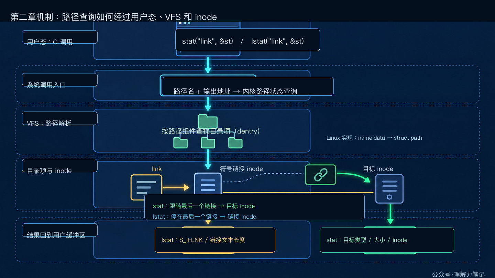
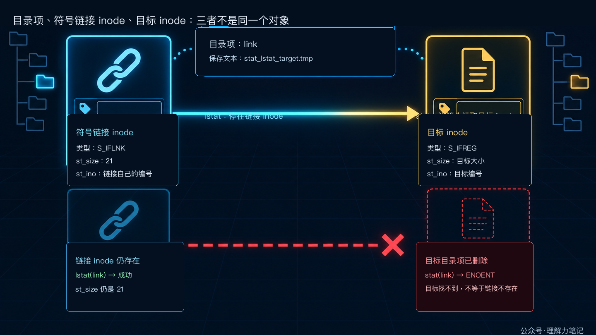

符号链接的真相：stat 和 lstat 差在哪
结论： stat(path, &st) 默认跟随最后一个路径分量的符号链接，返回目标对象的元数据；lstat(path, &st) 停在链接自身，返回 S_IFLNK 对应的状态。目标不存在时，stat 往往失败，lstat 仍能告诉你“这里有一条链接”。
你在清理临时目录、扫描配置文件或写文件管理器时，会遇到一个看起来像文件、实际只是“指向别处”的路径。此时调用 stat，得到的可能是目标文件；调用 lstat，得到的才是符号链接本身。两个函数名字只差一个字母，查询对象却不同。
这篇文章怎么读？
无论你为什么点进来，都能各取所需——只解决手头问题，看第一章就够；想彻底搞懂，再往下读。
| 你是谁 | 看哪一章 | 会得到什么 |
|---|
| 搜索者 / 被推荐者 | 第一章 · 先解决问题 | 最快的答案（知其然） |
| 学习者 | 第二章 · 机制解释 | 底层的来龙去脉（知其所以然） |
| 编程者 | 第三章 · 工程使用 | 正确、能直接用的写法 |
| 求职者 | 第四章 · 面试提炼 | 会怎么问、怎么答 |
第一章 · 先解决问题：看目标用 stat，看链接用 lstat
最短判断
- 想知道链接最终指向的对象是什么，用
stat(path, &st)。
- 想知道最后一个路径分量本身是不是链接，用
lstat(path, &st)。
- 想检查链接是否悬空，也用
lstat；stat 失败时还要看 errno，不能直接把它当成“链接不存在”。
下面的实验创建 stat_lstat_target.tmp 和一条指向它的相对链接。第一次查询时目标存在，第二次查询前删除目标，专门观察悬空链接。
最小实验
#define _POSIX_C_SOURCE 200809L
#include <errno.h>
#include <fcntl.h>
#include <inttypes.h>
#include <stdio.h>
#include <stdlib.h>
#include <string.h>
#include <sys/stat.h>
#include <unistd.h>
static const char *file_type(mode_t mode)
{
if (S_ISREG(mode)) return "regular";
if (S_ISDIR(mode)) return "directory";
if (S_ISLNK(mode)) return "symlink";
return "other";
}
static int write_all(int fd, const char *data, size_t length)
{
size_t written = 0U;
while (written < length) {
ssize_t n = write(fd, data + written, length - written);
if (n < 0) {
if (errno == EINTR) continue;
return -1;
}
if (n == 0) {
errno = EIO;
return -1;
}
written += (size_t)n;
}
return 0;
}
static int print_status(const char *label, const struct stat *st)
{
printf("%s: type=%s size=%" PRIdMAX " inode=%" PRIuMAX "\n",
label,
file_type(st->st_mode),
(intmax_t)st->st_size,
(uintmax_t)st->st_ino);
return 0;
}
static int query_stat(const char *label, const char *path, int follow)
{
struct stat st;
int result;
errno = 0;
result = follow ? stat(path, &st) : lstat(path, &st);
if (result == -1) {
printf("%s: %s errno=%d (%s)\n",
label, follow ? "stat" : "lstat", errno, strerror(errno));
return -1;
}
return print_status(label, &st);
}
int main(void)
{
const char *target = "stat_lstat_target.tmp";
const char *link = "stat_lstat_link.tmp";
const char payload[] = "target data\n";
int fd = -1;
int status = EXIT_FAILURE;
if (unlink(link) == -1 && errno != ENOENT) {
fprintf(stderr, "unlink %s: %s\n", link, strerror(errno));
return EXIT_FAILURE;
}
if (unlink(target) == -1 && errno != ENOENT) {
fprintf(stderr, "unlink %s: %s\n", target, strerror(errno));
return EXIT_FAILURE;
}
fd = open(target, O_WRONLY | O_CREAT | O_EXCL, 0640);
if (fd == -1) {
fprintf(stderr, "open %s: %s\n", target, strerror(errno));
goto cleanup;
}
if (write_all(fd, payload, sizeof(payload) - 1U) == -1) {
fprintf(stderr, "write %s: %s\n", target, strerror(errno));
goto cleanup;
}
if (close(fd) == -1) {
fprintf(stderr, "close %s: %s\n", target, strerror(errno));
fd = -1;
goto cleanup;
}
fd = -1;
if (symlink(target, link) == -1) {
fprintf(stderr, "symlink %s -> %s: %s\n",
link, target, strerror(errno));
goto cleanup;
}
if (query_stat("target via stat", target, 1) == -1) goto cleanup;
if (query_stat("link via stat", link, 1) == -1) goto cleanup;
if (query_stat("link via lstat", link, 0) == -1) goto cleanup;
if (unlink(target) == -1) {
fprintf(stderr, "unlink %s: %s\n", target, strerror(errno));
goto cleanup;
}
(void)query_stat("broken link via stat", link, 1);
(void)query_stat("broken link via lstat", link, 0);
status = EXIT_SUCCESS;
cleanup:
if (fd != -1 && close(fd) == -1) {
fprintf(stderr, "close %s: %s\n", target, strerror(errno));
status = EXIT_FAILURE;
}
if (unlink(link) == -1 && errno != ENOENT) {
fprintf(stderr, "cleanup unlink %s: %s\n", link, strerror(errno));
status = EXIT_FAILURE;
}
if (unlink(target) == -1 && errno != ENOENT) {
fprintf(stderr, "cleanup unlink %s: %s\n", target, strerror(errno));
status = EXIT_FAILURE;
}
return status;
}
编译与运行
环境是 macOS Darwin 23.6.0、Apple clang 16.0.0，编译时打开严格警告：
cc -std=c17 -Wall -Wextra -Wpedantic -Wconversion -Wshadow -O0 -g stat_lstat_demo.c -o stat_lstat_demo
./stat_lstat_demo
实际输出如下，inode 数字会随文件系统和运行时间变化：
target via stat: type=regular size=12 inode=65999465
link via stat: type=regular size=12 inode=65999465
link via lstat: type=symlink size=21 inode=65999466
broken link via stat: stat errno=2 (No such file or directory)
broken link via lstat: type=symlink size=21 inode=65999466
前三行说明：对同一个链接路径，stat 报告目标是普通文件、大小 12 字节，lstat 报告路径本身是符号链接，大小 21 字节。21 是链接里保存的文本 stat_lstat_target.tmp 的长度，不是目标文件的大小。
删除目标后，链接目录项并没有一起消失。stat 继续解析时找不到目标，于是返回 -1 和 ENOENT；lstat 不需要目标存在，所以仍能成功。要判断“链接是否悬空”，这正是最直接的办法。
第二章 · 从操作系统视角解释：路径解析在最后一步分叉
先把一次查询拆成几个动作。下面的图画的是 Linux 文件系统的语义路径；不同 libc 可能选择不同的系统调用入口，但对象之间的关系相同。
- 用户态程序把路径字符串（例如
link）和 struct stat 的地址传给 stat 或 lstat。
- 系统调用入口把请求交给内核。内核拿到的是“要解析的路径”和“结果写回哪里”。
- VFS 路径解析从当前目录或根目录开始，逐个查找路径组件。每个名字先对应到一个目录项（
dentry）。
- 目录项指向 inode。普通文件的 inode 直接描述文件；符号链接的 inode 保存一段目标路径文本。
- 查询结果回到用户态。内核把选中的 inode 字段写入用户提供的
struct stat，程序再读取 st_mode、st_size 和 st_ino。
在 Linux 内核实现里，路径查找还会用 nameidata 保存解析状态，当前路径位置通常由 struct path 表示，它把 dentry 和挂载点放在一起。这些是 Linux 的实现细节，不是 POSIX 应用程序可以直接依赖的接口；把它们放在 VFS 层，是为了说明“路径字符串怎样走到 inode”。

图中间的分叉只发生在最后一个路径组件。以 link 为例，前面的目录解析对两个函数相同：先找到名字为 link 的目录项，再看它指向的 inode 是什么。
- 调用
stat("link", &st) 时，内核继续读取符号链接 inode 里的目标路径，找到 target 的目录项和目标 inode。写回 struct stat 的类型、大小和 inode 编号都属于目标，所以看到的是 regular 和目标文件大小。
- 调用
lstat("link", &st) 时，内核在最后一个目录项停下，不读取它指向的目标。写回的是符号链接 inode，所以 S_ISLNK(st.st_mode) 为真，st_size 是链接文本的长度。
dentry 可以先理解成“路径组件的名字和 inode 之间的连接”。它和 inode 不是同一个对象：目录项回答“这个名字指向谁”，inode 回答“这个对象有哪些元数据”。把这两个层次分开，stat 和 lstat 的差异就不会变成一句难记的口诀。

上图还展示了一个容易误判的情况：相对符号链接保存的是文本 stat_lstat_target.tmp，这段文本相对于链接所在目录解析。链接自身有自己的 inode，目标文件也有自己的 inode；两者的 st_ino、类型和大小本来就可以不同。
“只对最后一个组件停止”也有实际含义。路径 dir/link/file 中，如果 dir 或中间的 link 是符号链接，lstat 仍需跟随它们才能继续找到最后的 file；它只改变最后一步的处理方式。这个边界正是 lstat 与“整条路径都不跟随”的区别。
悬空链接为什么还在
删除目标文件只会删除目标目录中的那条目录项，不会改写链接 inode 里保存的文本。于是链接仍然存在，但沿着文本解析时找不到目标。
此时 stat(link, &st) 需要完成目标解析，会返回 -1 和 ENOENT；lstat(link, &st) 只查询链接自己的 inode，仍会返回成功。文件管理器要显示“断开的链接”，通常先用 lstat 确认目录项本身存在，再决定是否读取目标。
第三章 · 工程上怎么使用：查询对象要和后续动作对齐
选择接口的三个场景
- 展示目标文件信息。 例如显示链接最终指向的大小、类型或修改时间，用
stat。
- 管理链接本身。 例如清理悬空链接、判断目录项是不是链接、统计链接文本长度，用
lstat。
- 已经有目录 fd，又要控制是否跟随。 POSIX
fstatat 可以配合 AT_SYMLINK_NOFOLLOW 查询最后一个链接自身；Linux 还提供 openat2 等更强的路径约束，但它们不是本篇示例的可移植替代品。
返回值和错误处理
两个函数成功返回 0，失败返回 -1；只有失败后才读取 errno。stat 遇到悬空链接时常见的是 ENOENT，但路径前缀没有搜索权限可能是 EACCES，路径中间某一项不是目录可能是 ENOTDIR。错误日志要带上调用的接口和路径，避免把“目标不存在”误报成“链接不存在”。
int describe_link(const char *path)
{
struct stat st;
if (lstat(path, &st) == -1) {
fprintf(stderr, "lstat %s: %s\n", path, strerror(errno));
return -1;
}
if (S_ISLNK(st.st_mode)) {
printf("%s is a symbolic link\n", path);
} else {
printf("%s is not a symbolic link\n", path);
}
return 0;
}
st_mode 同时包含类型和权限相关位，判断链接类型要用 S_ISLNK。不要把符号链接的模式位当成普通文件的 rwx 权限来解释；POSIX 对链接的权限位没有普通文件那样的稳定语义。
lstat 不是安全检查
lstat 解决的是“这次查询看见谁”的问题，不会把目录项锁住。另一个进程可以在查询后立刻替换链接目标，所以“先 lstat 确认是普通文件，再 open”仍然存在检查与使用之间的竞态。安全敏感的路径操作要让真正的打开接口承担约束，并在操作返回后处理错误；后续的 openat、O_NOFOLLOW 和 Linux openat2 会专门讨论这个问题。
第四章 · 面试提炼
简短回答
stat 默认跟随符号链接，返回目标文件的状态；lstat 不跟随最后一个路径分量，返回链接自身的状态。判断目标是否存在可以用 stat，判断路径本身是不是链接或是否为悬空链接用 lstat。对链接自身，st_size 是目标路径文本长度。
常见追问
lstat 会让整条路径都不跟随吗？ 不会。它只改变最后一个路径分量的处理方式，中间组件仍要继续解析。
删除目标后，为什么 lstat 还能成功？ 目标和链接是两个目录项。删除目标只删目标目录项，链接自己的 inode 和路径文本仍在。
能不能用 stat 返回 ENOENT 就断定链接不存在？ 不能。它也可能表示链接存在但目标不存在。要区分这两种情况，先用 lstat 查询链接自身，再按需要处理目标。
参考资料
往期回顾
C 语言·Linux 系统编程·文件与目录·选题预告
转载说明：本文用于技术学习与交流，转载请保留原文与出处。
本文为公众号「理解力笔记」原创。转载请联系作者，并保留出处。